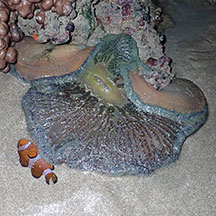
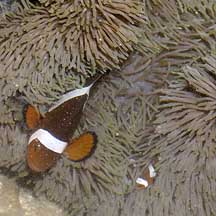
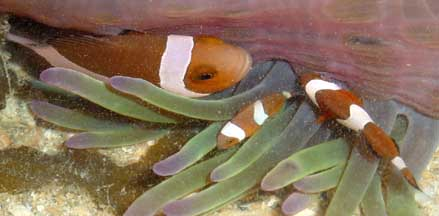
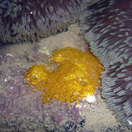
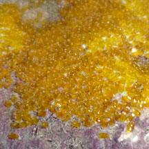
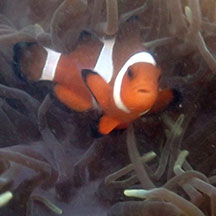
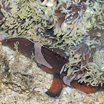

|
|
| fishes text index | photo index |
| Phylum Chordata > Subphylum Vertebrata > fishes > Family Pomacentridae > Genus Amphiprion |
| Clown
anemonefish Amphiprion ocellaris Family Pomacentridae updated Sep 2020
Where seen? This delightful fish is commonly seen in large sea anemones on some of our Southern Islands. At low tide, it is usually well hidden under or among the sea anemone tentacles. It is more active when the sea anemone is submerged. Look for it with the outgoing tide, when the water is clearer (than the incoming tide). Features: 2-9cm. Red to reddish-brown with three broad white bars (the middle bar widening at the middle of the side of the body towards the head) and black bands on the edges of all the fins including the top of the dorsal fin. False Clown? Our clown anemonefish (Amphiprion ocellaris) is sometimes called the False clown anemonefish, to distinguish it from another closely related fish called the Orange anemonefish (Amphiprion percula) which has black bands on the white body bars (see SeaLife Base fact sheet). The natural distribution of these two species of anemonefishes do NOT overlap. |

| Home Sweet Anemone Home: On our intertidal, the fish is often seen in Giant
carpet anemones. It is also sometimes in Magnificent
anemones and Merten's
carpet anemones. The anemonefish may sometimes be seen stranded at low tide near its anemone home. It is probably best to leave it alone and NOT try to 'rescue' it by putting it in a pool of water far away from its anemone home. These fishes are adapted to surviving at low tide and it is best that they are are close as possible to their anemone home when the tide turns. As the water rushes in, so do predators which will quickly eat up a defenceless anemonefish far from its protective anemone. |
 Stranded at low tide: best to leave it alone. Kusu Island, Aug 19 |
 In a Magnificent anemone. Terumbu Semakau, Jul 14 |
| An anemonefish seen swimming away from its home anemone as the tide falls. Terumbu Pempang Laut, Aug 2021  |
| Amazing gender switch: Anemonefishes can change their gender. Often, a sea anemone will be home to several anemonefishes of the same species. Usually the largest anemonefish in the group is the female and the next largest is the functioning male (although he is often less than half her size). For the Clown anemonefish, besides the difference in size, there are generally no differences in patterns or colours between the genders. If the female is removed from the group, the male becomes a female and the next largest becomes the dominant male. In this way, anemonefishes can continue to breed throughout the year. Small anemonefishes are not necessarily younger, just lower in the "pecking order". It is believed they remain small because of the constant harassment by the dominant pair. Small anemonefishes are thus NOT the babies of larger anemonefishes in the same anemone. |
 Smaller anemonefishes are NOT the babies of larger fishes in the same anemone! Sisters Island, Jul 07 |
 Fishes of several different sizes in one Magnificent anemone. Pulau Pawai, Dec 09 Photo shared by Loh Kok Sheng on flickr. |
 Eggs laid near the sea anemone. Pulau Sudong, Dec 09 Photo shared by Ivan Kwan g on flickr. |
 |
Many Clown anemonefishes of various sizes! |
| Human uses: Unfortunately, these
fishes are taken in large numbers from the wild for the aquarium trade.
The harvest may involve the use of cyanide or blasting, which damage
the habitat and kill many other creatures. Like other fish and creatures
harvested from the wild, most die before they can reach the retailers.
Without professional care, most die soon after they are sold. Often
of starvation as owners are unable to provide the small creatures
and plants that these fishes need to survive. In artificial conditions,
many succumb to diseases and poor health. Those that do survive are
unlikely to breed. There have been some success in breeding anemonefish for the aquarium trade. Although captive bred anemonefish are hardier, they are more expensive. Harvesting from the wild will probably continue so long as there are unscrupulous traders and aquarists. Status and threats: The Clown anemonefish is listed as 'Vulnerable' on the Red List of threatened animals of Singapore. According to the Singapore Red Data Book, "habitat protection and strict policing against illegal collection are required" to conserve our anemonefishes. |
| Clown anemonefishes on Singapore shores |
On wildsingapore
flickr
|
| Other sightings on Singapore shores |

 In a Magnificent anemone. St John's Island, Oct 25 Photo shared by Loh Kok Sheng on facebook. |
 Pulau Jong, May 10 Photo shared by James Koh on flickr. |
Links
References
|